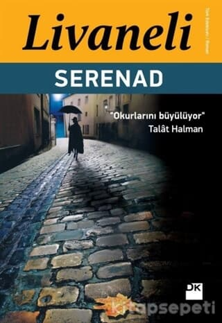

Editörün Favorileri
Milenaya Mektuplar - Kafka

Milena'ya Mektuplar mektuplarla örülmüş bir aşk hikâyesidir.Kafka'nın Milena'ya 1920 Nisanı'nda, yağmurlu bir günden söz ederek başlattığı bu yazışmalar,yazarın ölümünden kısa bir süre öncesine kadar süregiderken ümitsizliğin, çaresizliğin ve tıkanışın anlatımına dönüşür.
Kürk Mantolu Madonna - Sabahattin Ali

Romanda aşk, yalnızlık ve yabancılaşma temaları ağır basar. Genel olarak bir aşk romanı olarak görülse de aslında psikolojik tahliller eşliğinde bir insanın içinde yaşadığı topluma yabancılaşması ve yalnızlaşarak kendi kabuğuna çekilmesi romanda vurgulanır
Serenad - Zülfü Livaneli

Serenad, 60 yıldır süren bir aşkı ele alırken, ister herkesin bildiği Yahudi Soykırımı olsun isterse çok az kimsenin bildiği Mavi Alay, bütün siyasi sorunlarda asıl harcananın, gürültüye gidenin hep insan olduğu gerçeğini de göz önüne seriyor.
Uçurtma Avcısı - Khaled Hosseini

Konusu arkadaşlık üzerine kurulmuş olan Uçurtma Avcısı, insanlığa ait ortak duygularla tüm dünyayı kucaklıyor. Eserinde dostluk bağlarının yanı sıra baba sevgisi, fedakarlık, yalan ve ihanet gibi konuları da ustalıkla işleyen yazar, okurlarını ülkeler ve zamanlar arası bir yolculuğa çıkarıyor.